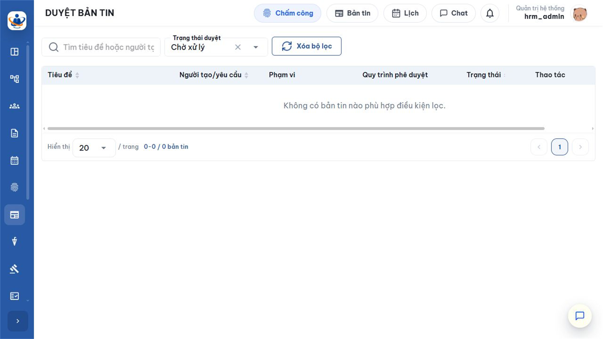
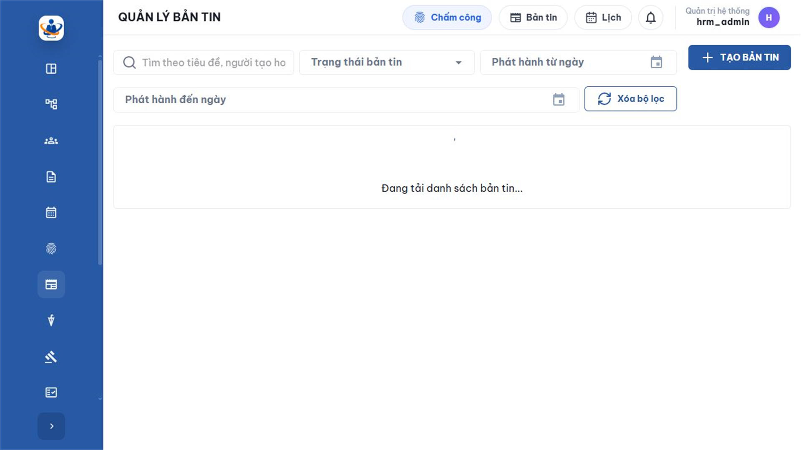
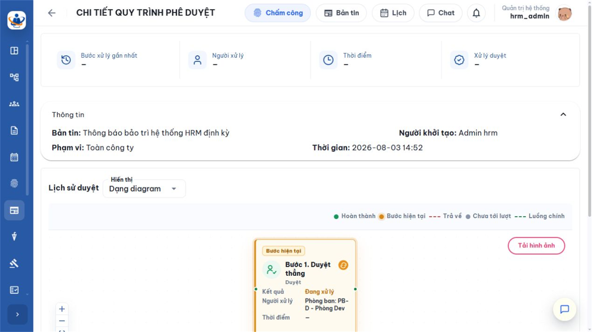

1. Mục đích và luồng phê duyệt tổng quát
Phê duyệt bản tin là bước kiểm soát trước khi thông tin nội bộ được phát hành hoặc bị thu hồi. Người duyệt cần xác nhận nội dung, phạm vi người nhận, tệp đính kèm và tính phù hợp với chính sách truyền thông; sau đó xử lý đúng bước mà mình được phân công trong quy trình.
1.1. Luồng phê duyệt phát hành
| 1. Người tạo gửi duyệt Bản tin chuyển từ Nháp sang Chờ duyệt và hệ thống khởi tạo một phiên quy trình. |
| ↓ |
| 2. Xác định bước hiện tại Hệ thống đối chiếu cấu hình để tìm cá nhân hoặc nhóm người có trách nhiệm xử lý. |
| ↓ |
| 3. Người duyệt kiểm tra Đọc tiêu đề, nội dung, phạm vi, người tạo, tệp và tiến trình trước khi ra quyết định. |
| ↓ |
| 4. Duyệt hoặc Từ chối Nhập ghi chú bắt buộc; hệ thống ghi người xử lý, thời gian và kết quả. |
| ↓ |
| 5. Chuyển bước hoặc kết thúc Duyệt: sang bước kế tiếp; Từ chối: đi theo hướng xử lý đã cấu hình. |
| ↓ |
| 6. Phát hành Khi bước cuối được duyệt, hệ thống chốt người nhận và hiển thị bản tin trên trang Bản tin. |
| DUYỆT ↓ Chuyển bước tiếp theo hoặc phát hành nếu đã là bước cuối | HOẶC | TỪ CHỐI ↓ Thực hiện hướng từ chối của quy trình và ghi nhận lý do |
1.2. Hai loại yêu cầu xuất hiện trong danh sách duyệt
| Loại yêu cầu | Khi nào phát sinh | Kết quả cuối cùng |
|---|---|---|
| Phát hành bản tin | Người tạo chọn Tạo & Gửi duyệt hoặc gửi một bản Nháp đi duyệt. | Duyệt hết bước: trạng thái Đã duyệt và xuất hiện với người nhận. Từ chối: trạng thái Bị từ chối theo phiên bản phần mềm hiện tại. |
| Thu hồi bản tin | Người quản lý yêu cầu gỡ một bản tin đã phát hành; tiêu đề yêu cầu thường có tiền tố Thu hồi:. | Duyệt hết bước: bản tin chuyển Đã thu hồi và không còn trên luồng tin. Từ chối: bản tin vẫn Đã duyệt và tiếp tục hiển thị. |
2. Điều kiện, phân quyền và cấu hình quy trình
2.1. Điều kiện để một người xử lý được hồ sơ
Một tài khoản chỉ xử lý được khi đồng thời thỏa các điều kiện sau:
- Tài khoản và hồ sơ nhân viên còn hoạt động, thuộc đúng doanh nghiệp của bản tin.
- Có quyền News.Approve — tên hiển thị là Duyệt bản tin.
- Được xác định là người duyệt của bước hiện tại theo cấu hình quy trình.
- Phiên quy trình vẫn đang xử lý; bản tin chưa bị người tạo thu hồi về Nháp và yêu cầu chưa được người khác hoàn tất.
| Có quyền nhưng danh sách vẫn trống là trường hợp hợp lệ Quyền News.Approve chỉ cho phép truy cập chức năng. Người đăng nhập còn phải thuộc đúng cá nhân, phòng ban, chức vụ hoặc nhóm được gán cho bước đang chờ. Ví dụ dữ liệu minh họa đang giao bước “Duyệt thẳng” cho Phòng Dev; tài khoản hrm_admin không thuộc đối tượng đó nên màn hình Duyệt bản tin không có hồ sơ để thao tác. |
2.2. Ý nghĩa cấu hình quy trình Duyệt bản tin

| Cấu hình | Ý nghĩa | Ảnh hưởng khi phê duyệt |
|---|---|---|
| Loại quy trình | Module nghiệp vụ sử dụng quy trình. | Phải là Duyệt bản tin. Chọn sai loại khiến quy trình không xuất hiện ở biểu mẫu tạo bản tin. |
| Trạng thái Hoạt động | Cho phép dùng quy trình để tạo phiên mới. | Ngừng hoạt động không làm mất lịch sử cũ, nhưng không dùng cho yêu cầu mới. |
| Thứ tự bước | Trình tự bắt buộc từ bước đầu tới bước cuối. | Chỉ người của bước hiện tại xử lý được; duyệt xong mới chuyển bước kế tiếp. |
| Người duyệt | Cá nhân hoặc nhóm được xác định theo tổ chức. | Cần duy trì dữ liệu nhân viên, phòng ban và chức vụ chính xác. Nhóm không có thành viên hợp lệ sẽ làm hồ sơ bị dừng. |
| Hành động bước | Loại công việc cần thực hiện. | Bản tin hiện chỉ hỗ trợ bước Duyệt; không dùng bước ký điện tử, ký số hoặc tải tài liệu. |
| Khi từ chối | Hủy quy trình hoặc chuyển về bước đã chọn. | Quản trị cần thống nhất cách vận hành trước khi kích hoạt. Cấu hình “Hủy quy trình” kết thúc yêu cầu ngay khi bị từ chối. |
3. Màn hình Duyệt bản tin
Mở Bản tin nội bộ > Duyệt bản tin. Màn hình chỉ liệt kê các yêu cầu mà người đăng nhập có trách nhiệm ở bước hiện tại hoặc các yêu cầu đã xử lý theo phạm vi dữ liệu của tài khoản.

| Khu vực | Cách sử dụng và ý nghĩa |
|---|---|
| Tìm kiếm | Nhập từ khóa liên quan đến tiêu đề hoặc thông tin yêu cầu để thu hẹp danh sách. |
| Trạng thái xử lý | Tất cả: gồm chờ và đã xử lý; Chờ xử lý: việc cần làm hiện tại; Đã xử lý: hồ sơ người dùng đã duyệt hoặc từ chối. |
| Thông tin yêu cầu | Phân biệt phát hành thông thường và yêu cầu thu hồi, xem người gửi, bước, trạng thái và thời gian phát sinh. |
| Thao tác | Mở chi tiết để đọc nội dung và xem tiến trình; khi đúng người của bước hiện tại, hệ thống hiển thị hành động Duyệt và Từ chối. |
Nếu không thấy hồ sơ cần xử lý, lần lượt bỏ từ khóa, chuyển bộ lọc về Chờ xử lý, kiểm tra quyền News.Approve, mở tiến trình từ màn hình Quản lý bản tin và đối chiếu người duyệt của bước hiện tại.
4. Kiểm tra hồ sơ trước khi xử lý
4.1. Những thông tin phải kiểm tra
| Nội dung | Câu hỏi kiểm tra | Rủi ro nếu bỏ qua |
|---|---|---|
| Tiêu đề và nội dung | Thông tin có chính xác, rõ thời gian, địa điểm, đơn vị phụ trách; có lỗi chính tả hoặc dữ liệu nhạy cảm không? | Gây hiểu nhầm hoặc phát tán thông tin sai. |
| Phạm vi | Toàn công ty, phòng ban hay người dùng cụ thể đã đúng với mục tiêu truyền thông chưa? | Gửi thừa người hoặc bỏ sót người cần nhận. |
| Tệp đính kèm | Tệp có đúng phiên bản, mở được, tên dễ hiểu và không chứa dữ liệu ngoài phạm vi không? | Người nhận dùng nhầm biểu mẫu hoặc lộ dữ liệu. |
| Người tạo | Người gửi có đúng đơn vị chịu trách nhiệm và có thẩm quyền công bố nội dung không? | Không rõ đầu mối giải đáp và trách nhiệm. |
| Tiến trình | Đây có đúng là bước của mình, các bước trước đã hoàn thành và kết quả có nhất quán không? | Xử lý sai vai trò hoặc bỏ qua kiểm soát bắt buộc. |
4.2. Xem tiến trình quy trình


| Danh sách người nhận chưa được chốt khi đang Chờ duyệt Ở giai đoạn này, phạm vi là điều kiện dự kiến. Hệ thống chỉ lập danh sách người nhận tại thời điểm bước cuối được duyệt. Vì vậy người duyệt cần đặc biệt kiểm tra phạm vi trước khi kết thúc quy trình. |
5. Duyệt yêu cầu phát hành
- Mở Bản tin nội bộ > Duyệt bản tin, đặt trạng thái Chờ xử lý.
- Mở yêu cầu cần duyệt. Đọc toàn bộ tiêu đề, nội dung; mở tệp đính kèm và đối chiếu phạm vi.
- Xem tiến trình để chắc chắn đây là đúng bước đang giao cho mình.
- Chọn Duyệt.
- Nhập Ghi chú bắt buộc, tối đa 500 ký tự. Nên ghi ngắn gọn điều đã kiểm tra hoặc điều kiện áp dụng, không chỉ nhập “OK”.
- Kiểm tra lần cuối rồi xác nhận. Không bấm nhiều lần trong lúc hệ thống đang xử lý.
| Trường hợp | Điều xảy ra sau khi duyệt |
|---|---|
| Còn bước tiếp theo | Yêu cầu tiếp tục ở trạng thái Chờ duyệt; người duyệt của bước kế tiếp nhận việc. Bản tin vẫn chưa hiển thị cho người nhận. |
| Đã là bước cuối | Phiên quy trình hoàn tất; bản tin chuyển Đã duyệt, ghi thời gian phát hành, chốt người nhận và xuất hiện trên trang Bản tin. |
| Người khác vừa xử lý trước | Hệ thống từ chối thao tác đã lỗi thời. Tải lại danh sách và xem kết quả mới nhất. |
Ghi chú duyệt được lưu trong lịch sử quy trình. Chỉ ghi thông tin phục vụ kiểm soát; không đưa mật khẩu, dữ liệu riêng tư hoặc nội dung không cần thiết vào ghi chú.
6. Từ chối yêu cầu phát hành
- Mở hồ sơ và xác định chính xác nội dung không đạt: sai thông tin, sai phạm vi, tệp không đúng hoặc chưa đủ thẩm quyền.
- Chọn Từ chối.
- Nhập Lý do từ chối bắt buộc, tối đa 500 ký tự. Nêu rõ vị trí cần sửa và yêu cầu mong muốn.
- Xem cảnh báo, sau đó xác nhận từ chối.
| Hiểu đúng trạng thái Bị từ chối của phiên bản hiện tại Khi quy trình kết thúc bằng từ chối, bản tin chuyển sang Bị từ chối và không phát hành. Trong giao diện hiện tại, chỉ bản Nháp mới được sửa và gửi lại; bản Bị từ chối không có chức năng sửa trực tiếp. Người tạo cần xem lý do và tạo một bản tin mới nếu vẫn cần phát hành. Đây là hành vi thực tế cần ưu tiên khi khác với mô tả nghiệp vụ cũ. |
| Lý do chưa tốt | Cách viết rõ ràng hơn |
|---|---|
| “Sai” hoặc “Làm lại” | “Thời gian trong nội dung là 08:00 nhưng tệp đính kèm ghi 09:00. Vui lòng xác nhận giờ chính thức và tạo lại bản tin.” |
| “Sai đối tượng” | “Nội dung chỉ áp dụng Phòng Kinh doanh, không phát hành Toàn công ty. Vui lòng chọn đúng phạm vi trước khi gửi lại.” |
| “Thiếu file” | “Chưa có mẫu đăng ký được nhắc tại đoạn cuối. Vui lòng đính kèm đúng phiên bản đã phê duyệt.” |
7. Phê duyệt yêu cầu thu hồi
Thu hồi dùng khi một bản tin đã phát hành cần được gỡ khỏi luồng tin, ví dụ nội dung sai nghiêm trọng, hết hiệu lực sớm hoặc có thông tin không còn được phép phổ biến. Đây là một yêu cầu phê duyệt riêng, không phải thao tác thu hồi hồ sơ Chờ duyệt về Nháp của người tạo.
| 1. Bản tin đang Đã duyệt Nội dung hiện đang hiển thị cho danh sách người nhận đã chốt. |
| ↓ |
| 2. Người có quyền gửi yêu cầu thu hồi Nhập lý do thu hồi và khởi tạo quy trình; yêu cầu thường có tiêu đề “Thu hồi: …”. |
| ↓ |
| 3. Người duyệt kiểm tra tác động Đối chiếu bản tin gốc, lý do, phạm vi và nhu cầu phát hành thông tin thay thế. |
| ↓ |
| 4. Duyệt hoặc Từ chối thu hồi Duyệt: chuyển bước/kết thúc; Từ chối: giữ nguyên bản tin Đã duyệt. |
| ↓ |
| 5. Hoàn tất thu hồi Bản tin chuyển Đã thu hồi và không còn hiển thị trên Bản tin của người nhận. |
| Quyết định | Kết quả | Việc nên làm tiếp |
|---|---|---|
| Duyệt thu hồi | Bản tin trở thành Đã thu hồi và bị ẩn khỏi luồng tin hiện tại. | Nếu người đọc cần thông tin thay thế, yêu cầu đơn vị tạo một bản tin mới; không chỉnh sửa nội dung lịch sử đã thu hồi. |
| Từ chối thu hồi | Yêu cầu thu hồi kết thúc nhưng bản tin gốc vẫn Đã duyệt và tiếp tục hiển thị. | Ghi rõ vì sao cần giữ bản tin hoặc điều kiện để gửi lại yêu cầu sau. |
Lý do thu hồi có giới hạn 4.000 ký tự tại nghiệp vụ tạo yêu cầu; ghi chú Duyệt hoặc Lý do từ chối của từng bước vẫn giới hạn 500 ký tự.
8. Theo dõi kết quả, lỗi thường gặp và kiểm tra
8.1. Theo dõi và lịch sử
- Màn hình Duyệt bản tin: chuyển bộ lọc sang Đã xử lý để xem các việc đã thực hiện.
- Màn hình Quản lý bản tin: xem trạng thái cuối, thời điểm phát hành, tình trạng yêu cầu thu hồi và tiến trình.
- Chi tiết quy trình: xem từng bước, người xử lý, thời gian, ghi chú và kết quả.
- Khi bước cuối hoàn tất, hệ thống cập nhật dữ liệu và thông báo theo cơ chế của ứng dụng; nên tải lại nếu màn hình đang mở lâu.
8.2. Lỗi thường gặp
| Hiện tượng | Nguyên nhân thường gặp | Cách xử lý |
|---|---|---|
| Không mở được Duyệt bản tin | Thiếu quyền News.Approve. | Đề nghị quản trị kiểm tra vai trò và quyền Duyệt bản tin; đăng nhập lại sau khi quyền được cập nhật. |
| Danh sách Chờ xử lý trống | Không thuộc bước hiện tại; có bộ lọc; hồ sơ đã được xử lý hoặc đã bị thu hồi. | Xóa bộ lọc, kiểm tra tiến trình, đối chiếu người duyệt của bước và tải lại. |
| Không thấy nút Duyệt/Từ chối | Đang xem lịch sử, không phải bước của mình hoặc phiên không còn chờ. | Mở đúng yêu cầu Chờ xử lý; không cố thao tác trên hồ sơ đã hoàn tất. |
| Không xác nhận được | Chưa nhập ghi chú/lý do, vượt 500 ký tự hoặc trạng thái đã thay đổi. | Nhập nội dung hợp lệ, rút gọn nếu cần, tải lại và kiểm tra kết quả hiện tại. |
| Duyệt cuối nhưng chưa thấy trên luồng tin | Chưa phải bước cuối, người đăng nhập không thuộc phạm vi hoặc màn hình chưa tải dữ liệu mới. | Xem tiến trình, kiểm tra phạm vi/người nhận đã chốt và tải lại trang Bản tin. |
| Quy trình bị dừng ở một bước | Đối tượng duyệt không có thành viên hoạt động hoặc cấu hình bước không còn phù hợp. | Quản trị kiểm tra dữ liệu tổ chức và cấu hình; không sửa lịch sử bằng cách can thiệp dữ liệu trực tiếp. |
8.3. Danh sách kiểm tra trước khi xác nhận
- Đúng loại yêu cầu: phát hành hay thu hồi.
- Đã đọc toàn bộ nội dung và mở các tệp đính kèm cần thiết.
- Đã kiểm tra người tạo, phạm vi, thời gian, đầu mối và dữ liệu nhạy cảm.
- Đây là đúng bước và đúng trách nhiệm của người đang đăng nhập.
- Ghi chú hoặc lý do rõ ràng, có thể dùng để truy vết; không quá 500 ký tự.
- Đã hiểu kết quả: chuyển bước, phát hành, bị từ chối, giữ nguyên hay thu hồi bản tin.